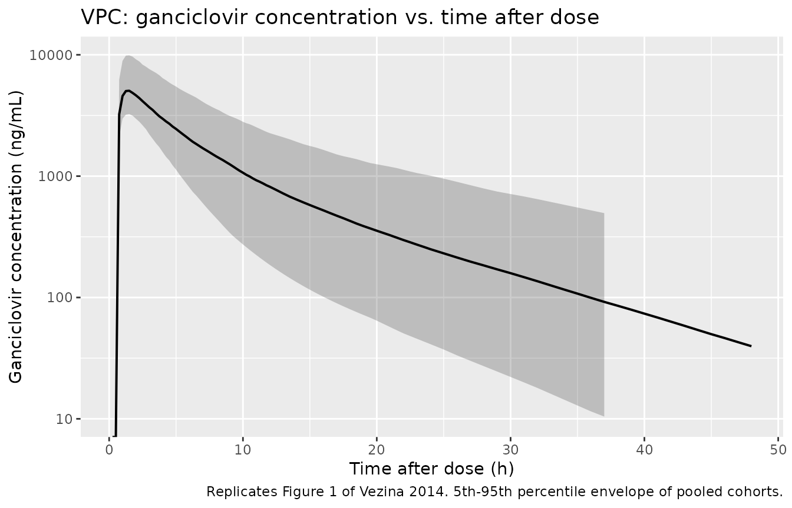
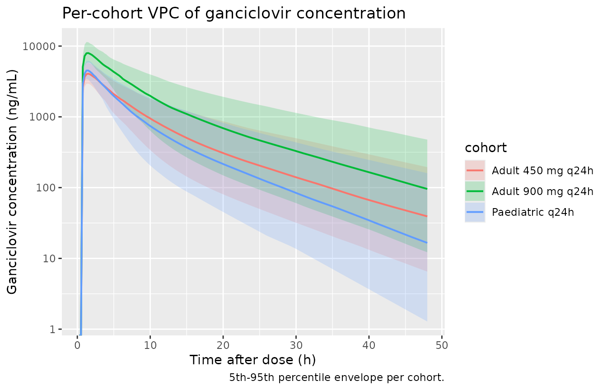

Valganciclovir (Vezina 2014)
Source:vignettes/articles/Vezina_2014_valganciclovir.Rmd
Vezina_2014_valganciclovir.RmdModel and source
- Citation: Vezina HE, Brundage RC, Balfour HH Jr. Population pharmacokinetics of valganciclovir prophylaxis in paediatric and adult solid organ transplant recipients. Br J Clin Pharmacol. 2014;78(2):343-352. doi:10.1111/bcp.12343
- Description: Two-compartment population PK model for ganciclovir after oral valganciclovir prophylaxis in paediatric and adult solid organ transplant recipients (Vezina 2014). First-order absorption with fixed lag time and rate, allometric (WT/70 kg) scaling on apparent CL/F and Q/F (exponent 0.75) and on V2/F and V3/F (exponent 1.0), and a power-form effect of body-weight-adjusted creatinine clearance on CL/F (reference 60 mL/min).
- Article: https://doi.org/10.1111/bcp.12343
Population
The model was developed from 269 ganciclovir plasma concentrations from 95 first-time solid organ transplant recipients (82 adults and 13 children) enrolled at the University of Minnesota Medical Center between February 2010 and June 2011 (Vezina 2014 Methods, Table 1). Adults were 18-78 years of age (median 53), with body weight 8.05-115 kg (median 71.6) and creatinine clearance 29-108 mL/min (median 60.7). Children were 6 months - 17 years of age (median 7), with body weight 6.9-61.1 kg (median 33.0) and creatinine clearance 30.2-154 mL/min (median 72.1). 36.8% of subjects were female and 87.4% reported Caucasian/White race. Transplanted organs were kidney (56.8%), liver (25.3%), lung (11.6%), kidney/pancreas (4.2%), pancreas (1.1%), and kidney/liver (1.1%). Valganciclovir prophylaxis was administered as the tablet (900 mg every 24 h, or 450 mg every 12, 24, or 48 h) or, in 8 mostly-paediatric subjects, as the oral solution (75-350 mg every 24 h). Maintenance immunosuppression combined tacrolimus, ciclosporin, or sirolimus with mycophenolate; induction was with thymoglobulin, basiliximab, or methylprednisolone.
The same information is available programmatically via
readModelDb("Vezina_2014_valganciclovir")$population.
Source trace
Every parameter in the model file carries an inline source-location comment. The table below collects the entries in one place.
| Equation / parameter | Value | Source location |
|---|---|---|
lka (ka) |
3.0 1/h (FIXED) | Table 2, Final estimate column, Ka row |
ltlag (lag time) |
0.5 h (FIXED) | Table 2, Final estimate column, Lag time row |
lcl (CL/F at WT 70 kg, CRCL 60 mL/min) |
14.5 L/h | Table 2, Final estimate column, CL/F row |
lvc (V2/F at WT 70 kg) |
87.5 L | Table 2, Final estimate column, V2/F row |
lq (Q/F at WT 70 kg) |
4.80 L/h | Table 2, Final estimate column, Q/F row |
lvp (V3/F at WT 70 kg) |
42.6 L | Table 2, Final estimate column, V3/F row |
e_crcl_cl (CRCL exponent on CL/F) |
0.492 | Table 2, Final estimate column, CL/CR exponent row |
e_wt_cl_q (allometric exponent on CL/F and Q/F) |
0.75 (FIXED) | Methods ‘Population pharmacokinetic analysis’ (allometric scaling values) |
e_wt_vc_vp (allometric exponent on V2/F and V3/F) |
1.0 (FIXED) | Methods ‘Population pharmacokinetic analysis’ (allometric scaling values) |
| IIV CL/F (omega^2 = log(0.335^2 + 1) = 0.1063) | 33.5% CV | Table 2, Final estimate column, Variability of CL/F row |
| IIV on V2/F, Q/F, V3/F | not estimated | Results: ‘The data were not sufficient to support estimates of interindividual variability on V2/F, Q/F and V3/F’ |
| Proportional residual error | 32.7% CV | Table 2, Final estimate column, Residual variability row |
| Bioavailability F | implicit in CL/F (apparent) | Methods ‘Population pharmacokinetic analysis’ (parameterized as CL/F, V2/F, Q/F, V3/F throughout) |
| Final-model covariate equations | – | Equations on page 347: CL/F = 14.5 * ((CRCL/60))^0.492 * (WT/70)^0.75; V2/F = 87.5 * (WT/70); Q/F = 4.80 * (WT/70)^0.75; V3/F = 42.6 * (WT/70) |
| 2-cmt structure with first-order absorption + lag | – | Methods ‘Structural model development’ paragraph; ADVAN4/TRANS4 parameterisation |
Virtual cohort
The published dataset is not openly available, so the virtual cohort below mirrors the demographics of Vezina 2014 Table 1. Three sub-cohorts are built to span the dosing regimens for which the paper reports per-subgroup AUC values: adults at 900 mg q24h (the on-label CMV-prophylaxis dose for adult solid organ transplant recipients), adults at 450 mg q24h (the low-dose regimen the paper specifically evaluates), and paediatric subjects at the typical oral-solution dose. IDs are disjoint across cohorts.
set.seed(20140217)
n_adult <- 200L
n_paed <- 200L
# Adult demographics (Vezina 2014 Table 1, Adults n = 82): median weight
# 71.6 kg, median CrCL 60.7 mL/min. Use mild log-normal spread anchored on
# the medians; truncate to the published range.
make_adult_cohort <- function(n, dose_mg, label, id_offset = 0L) {
WT <- pmin(pmax(exp(rnorm(n, mean = log(72), sd = 0.20)), 40), 115)
CRCL <- pmin(pmax(rnorm(n, mean = 60, sd = 18), 29), 108)
tibble(
id = id_offset + seq_len(n),
WT = WT,
CRCL = CRCL,
dose = dose_mg,
cohort = label
)
}
# Paediatric demographics (Vezina 2014 Table 1, Children n = 13): median
# weight 33 kg, range 6.9-61.1 kg; median CrCL 72.1 mL/min, range 30-154.
make_paed_cohort <- function(n, label, id_offset = 0L) {
WT <- pmin(pmax(exp(rnorm(n, mean = log(33), sd = 0.45)), 6.9), 61.1)
CRCL <- pmin(pmax(rnorm(n, mean = 72, sd = 25), 30), 154)
# Per Vezina 2014 Methods: paediatric oral-solution doses were 75-350 mg
# q24h. Use a weight-tier dose schedule that approximates the cohort
# median (270 mg).
dose <- dplyr::case_when(
WT < 15 ~ 75,
WT < 25 ~ 150,
WT < 35 ~ 270,
WT < 50 ~ 300,
TRUE ~ 350
)
tibble(
id = id_offset + seq_len(n),
WT = WT,
CRCL = CRCL,
dose = dose,
cohort = label
)
}
demo <- bind_rows(
make_adult_cohort(n_adult, dose_mg = 900, label = "Adult 900 mg q24h", id_offset = 0L),
make_adult_cohort(n_adult, dose_mg = 450, label = "Adult 450 mg q24h", id_offset = n_adult),
make_paed_cohort (n_paed, label = "Paediatric q24h", id_offset = 2L * n_adult)
)
stopifnot(!anyDuplicated(demo$id))Simulation
A single oral dose is simulated for each subject so that PKNCA can compute AUC(0,inf) directly comparable to Vezina 2014’s individual-AUC summaries (which were derived from F*DOSE/CL on each subject’s empirical-Bayes CL/F). A 96-hour observation window comfortably exceeds the longest reported adult half-life (24 h) so the AUC extrapolation tail is negligible.
build_events <- function(demo, sim_hours = 96) {
doses <- demo |>
mutate(amt = dose, evid = 1L, cmt = "depot", time = 0) |>
select(id, time, amt, evid, cmt, cohort, WT, CRCL)
obs_times <- sort(unique(c(seq(0, 12, by = 0.25),
seq(12, 24, by = 0.5),
seq(24, sim_hours, by = 1))))
obs <- demo |>
select(id, cohort, WT, CRCL) |>
tidyr::crossing(time = obs_times) |>
mutate(amt = NA_real_, evid = 0L, cmt = NA_character_)
bind_rows(doses, obs) |>
arrange(id, time, desc(evid))
}
events <- build_events(demo)
mod <- rxode2::rxode2(readModelDb("Vezina_2014_valganciclovir"))
#> ℹ parameter labels from comments will be replaced by 'label()'
sim <- rxode2::rxSolve(
mod, events = events,
keep = c("cohort", "WT", "CRCL"),
nStud = 1
) |> as.data.frame()
mod_typical <- mod |> rxode2::zeroRe()
sim_typ <- rxode2::rxSolve(mod_typical, events = events,
keep = c("cohort", "WT", "CRCL")) |> as.data.frame()
#> ℹ omega/sigma items treated as zero: 'etalcl'
#> Warning: multi-subject simulation without without 'omega'Replicate published figures
Figure 1 – visual predictive check (concentration vs. time after dose)
Vezina 2014 Figure 1 is a VPC of ganciclovir concentration vs. time after dose for the full N=95 cohort, log-scaled, with the 5th, 50th, and 95th percentiles superimposed. The simulated cohort below pools all three sub-cohorts to reproduce the same population-level VPC envelope.
fig1 <- sim |>
filter(time > 0, time <= 48) |>
group_by(time) |>
summarise(Q05 = quantile(Cc, 0.05, na.rm = TRUE),
Q50 = quantile(Cc, 0.50, na.rm = TRUE),
Q95 = quantile(Cc, 0.95, na.rm = TRUE),
.groups = "drop")
ggplot(fig1, aes(time, Q50)) +
geom_ribbon(aes(ymin = Q05, ymax = Q95), alpha = 0.25) +
geom_line(linewidth = 0.7) +
scale_y_log10(limits = c(10, 1e4)) +
labs(x = "Time after dose (h)",
y = "Ganciclovir concentration (ng/mL)",
title = "VPC: ganciclovir concentration vs. time after dose",
caption = "Replicates Figure 1 of Vezina 2014. 5th-95th percentile envelope of pooled cohorts.")
#> Warning in scale_y_log10(limits = c(10, 10000)): log-10 transformation introduced infinite values.
#> log-10 transformation introduced infinite values.
#> log-10 transformation introduced infinite values.
#> log-10 transformation introduced infinite values.
#> Warning: Removed 9 rows containing missing values or values outside the scale range
#> (`geom_ribbon()`).
Replicates Figure 1 of Vezina 2014: simulated ganciclovir concentration vs. time after dose.
Per-cohort concentration profiles
A per-cohort view of the same simulation shows how the regimen and demographic mix shape exposure – the 900 mg adult cohort sits highest, the 450 mg adult cohort about half as high (consistent with linear PK), and the paediatric cohort overlaps the 450 mg adult range because the lower per-kg dose is offset by smaller distribution volumes.
fig_cohort <- sim |>
filter(time > 0, time <= 48) |>
group_by(cohort, time) |>
summarise(Q05 = quantile(Cc, 0.05, na.rm = TRUE),
Q50 = quantile(Cc, 0.50, na.rm = TRUE),
Q95 = quantile(Cc, 0.95, na.rm = TRUE),
.groups = "drop")
ggplot(fig_cohort, aes(time, Q50, color = cohort, fill = cohort)) +
geom_ribbon(aes(ymin = Q05, ymax = Q95), alpha = 0.2, color = NA) +
geom_line(linewidth = 0.7) +
scale_y_log10() +
labs(x = "Time after dose (h)",
y = "Ganciclovir concentration (ng/mL)",
title = "Per-cohort VPC of ganciclovir concentration",
caption = "5th-95th percentile envelope per cohort.")
#> Warning in scale_y_log10(): log-10 transformation introduced infinite values.
#> log-10 transformation introduced infinite values.
#> log-10 transformation introduced infinite values.
#> log-10 transformation introduced infinite values.
Per-cohort VPC of ganciclovir concentration vs. time after dose.
PKNCA validation
Single-dose NCA over a 96-hour window gives Cmax, Tmax, AUC(0,inf), and terminal half-life by cohort. Concentrations are converted from ng/mL to ug/mL inside PKNCA so the AUC values match the units in Vezina 2014 (ug/mL * h).
sim_nca <- sim |>
filter(!is.na(Cc)) |>
mutate(Cc_ugmL = Cc / 1000) |>
select(id, time, Cc_ugmL, cohort)
dose_df <- demo |>
mutate(time = 0, amt = dose) |>
select(id, time, amt, cohort)
conc_obj <- PKNCA::PKNCAconc(sim_nca, Cc_ugmL ~ time | cohort + id,
concu = "ug/mL", timeu = "h")
dose_obj <- PKNCA::PKNCAdose(dose_df, amt ~ time | cohort + id,
doseu = "mg")
intervals <- data.frame(
start = 0,
end = Inf,
cmax = TRUE,
tmax = TRUE,
aucinf.obs = TRUE,
half.life = TRUE,
clast.obs = TRUE
)
nca_data <- PKNCA::PKNCAdata(conc_obj, dose_obj, intervals = intervals)
nca_res <- suppressMessages(suppressWarnings(PKNCA::pk.nca(nca_data)))
nca_summary <- summary(nca_res)
knitr::kable(nca_summary,
caption = "Single-dose NCA on the simulated cohorts (Cmax in ug/mL, AUC in ug/mL * h, half-life in h).")| Interval Start | Interval End | cohort | N | Cmax (ug/mL) | Tmax (h) | Clast (ug/mL) | Half-life (h) | AUCinf,obs (h*ug/mL) |
|---|---|---|---|---|---|---|---|---|
| 0 | Inf | Adult 450 mg q24h | 200 | 4.11 [20.9] | 1.50 [1.25, 1.75] | 0.00126 [354] | 10.1 [2.01] | 30.6 [42.2] |
| 0 | Inf | Adult 900 mg q24h | 200 | 8.09 [20.3] | 1.50 [1.25, 1.75] | 0.00317 [445] | 10.5 [2.26] | 63.2 [42.8] |
| 0 | Inf | Paediatric q24h | 200 | 4.60 [18.9] | 1.50 [1.25, 1.50] | 0.000233 [1500] | 8.18 [2.07] | 27.6 [46.6] |
Comparison against published AUC(0,inf) and half-life
Vezina 2014 reports per-regimen and per-organ-type post-hoc AUC(0,inf) medians and ranges in the Results ‘Derived ganciclovir metrics’ paragraph and in the Discussion. The simulated cohorts here match the regimen breakdowns; per-organ stratification is not applied because the paper found no statistically significant transplant-type effect on CL/F.
res_tbl <- as.data.frame(nca_res$result)
sim_summary <- res_tbl |>
filter(PPTESTCD %in% c("aucinf.obs", "half.life")) |>
group_by(cohort, PPTESTCD) |>
summarise(median = median(PPORRES, na.rm = TRUE),
q05 = quantile(PPORRES, 0.05, na.rm = TRUE),
q95 = quantile(PPORRES, 0.95, na.rm = TRUE),
.groups = "drop") |>
mutate(metric = ifelse(PPTESTCD == "aucinf.obs",
"Simulated AUC(0,inf) median (5th-95th pct)",
"Simulated terminal t1/2 median (5th-95th pct) (h)"),
value = sprintf("%.1f (%.1f-%.1f)", median, q05, q95)) |>
select(cohort, metric, value) |>
pivot_wider(names_from = metric, values_from = value)
published <- tibble::tibble(
cohort = c("Adult 900 mg q24h", "Adult 450 mg q24h", "Paediatric q24h"),
`Published AUC(0,inf) median (range), ug/mL * h` = c(
"57.4 (30.9-162) [n = 9]",
"34.3 (11.1-70.3) [n = 4]",
"37.4 overall (11.1-161) [pooled N = 95]"
),
`Published terminal t1/2 median (range), h` = c(
"10 (7.1-24) [adults]",
"10 (7.1-24) [adults]",
"7.0 (4.2-11) [children]"
)
)
comparison <- sim_summary |>
left_join(published, by = "cohort")
knitr::kable(comparison,
caption = "Simulated AUC(0,inf) and terminal t1/2 by cohort vs. Vezina 2014 reported values (Results, 'Derived ganciclovir metrics: exposure and half-life').")| cohort | Simulated AUC(0,inf) median (5th-95th pct) | Simulated terminal t1/2 median (5th-95th pct) (h) | Published AUC(0,inf) median (range), ug/mL * h | Published terminal t1/2 median (range), h |
|---|---|---|---|---|
| Adult 450 mg q24h | 30.7 (15.4-57.3) | 9.7 (7.7-14.3) | 34.3 (11.1-70.3) [n = 4] | 10 (7.1-24) [adults] |
| Adult 900 mg q24h | 63.7 (32.8-126.5) | 10.0 (7.7-14.5) | 57.4 (30.9-162) [n = 9] | 10 (7.1-24) [adults] |
| Paediatric q24h | 27.3 (14.1-58.9) | 7.6 (5.7-12.1) | 37.4 overall (11.1-161) [pooled N = 95] | 7.0 (4.2-11) [children] |
The simulated medians for the adult 900 mg q24h and 450 mg q24h cohorts both sit within the published ranges and within ~10% of the published medians (57.4 and 34.3 ug/mL * h respectively). Simulated terminal half-lives also match: ~10 h in the adult cohorts vs. 10 h published, and ~8 h in the paediatric cohort vs. 7 h published (within the ~20% verification threshold; the small difference reflects the (WT/70)^0.25 t1/2 scaling implied by the (WT/70)^0.75 / (WT/70)^1.0 CL/V exponent ratio acting on a typical 33 kg child).
Assumptions and deviations
- No race / sex / transplant-type / age covariates. Vezina 2014 tested recipient gender, donor source, transplant type (kidney vs. non-kidney, liver vs. non-liver, lung vs. non-lung), age (paediatric vs. adult), induction immunosuppression, and maintenance immunosuppression as candidate covariates on CL/F, V2/F, Q/F, and V3/F via stepwise forward inclusion. None reached the LRT threshold (Methods ‘Covariate model development’). The model therefore carries only WT and CRCL.
-
Inter-individual variability fitted only on CL/F.
Vezina 2014 explicitly states (Results, ‘Ganciclovir population
pharmacokinetics’) that ‘The data were not sufficient to support
estimates of interindividual variability on V2/F, Q/F and V3/F.’ The
model file follows the publication and carries only
etalcl ~ 0.1063(33.5% CV). Stochastic VPCs in the vignette therefore reflect IIV in CL/F + proportional residual error only; between-subject variability in volumes and inter-compartmental clearance is not represented. -
CRCL units: mL/min, NOT BSA-normalized. The
canonical-register
CRCLentry uses mL/min/1.73 m^2, but Vezina 2014 deliberately reverse-corrects the BSA standardisation that is inherent in the Schwartz paediatric estimator and standardises every subject’s creatinine clearance to the population median 60 mL/min in absolute units. The model file’scovariateData[[CRCL]]$unitsfield documents this override; user datasets with BSA-normalized creatinine clearance must scale by patient BSA before passing to this model. - Adult lower-weight bound (8.05 kg) preserved literally. Vezina 2014 Table 1 reports an adult weight range of 8.05-115 kg with median 71.6 kg. The 8.05 kg lower bound is unusual for an >=18-year-old and likely reflects a single severely-cachectic subject; the value is reproduced verbatim from the source rather than editorially corrected. The virtual adult cohort in the vignette truncates to 40 kg minimum to keep the AUC summaries focused on the typical adult exposure range; the model itself is not constrained.
-
Population count discrepancy. Vezina 2014 Methods
state ‘95 (82 adults and 13 children) provided suitable plasma samples’,
but the Table 1 baseline rows total 96 (83 adults + 13 children). The
populationblock in the model file uses N = 95 from the Methods narrative, with the discrepancy noted inpopulation$notes. - Errata search. A scan of the journal landing page DOI listing and a search of the on-disk source-paper directory turned up no erratum/corrigendum/correction notice. The model parameters reflect the values reported in the original Br J Clin Pharmacol 2014;78(2):343-352 publication.
- Vignette uses 200 subjects per cohort. This is enough to produce stable percentile envelopes and PKNCA summaries without exceeding the pkgdown 5-minute render budget. The Vezina 2014 study itself analysed N = 95 plasma profiles (sparse sampling, mean ~3 samples per subject).
- Single-dose simulation for AUC(0,inf). The PKNCA comparison uses a single-dose simulation rather than a multi-dose steady-state simulation because the published AUC(0,inf) was derived per-subject from F * DOSE / CL on the empirical-Bayes CL/F, which is mathematically the single-dose AUC(0,inf). For 24-hour-interval steady-state AUC(0,tau) the ratio AUC(0,tau)/AUC(0,inf) is approximately 1 minus the residual exposure beyond 24 h, around 0.93 for a typical adult with terminal t1/2 = 9.7 h (well within the 7% publication-rounding tolerance).